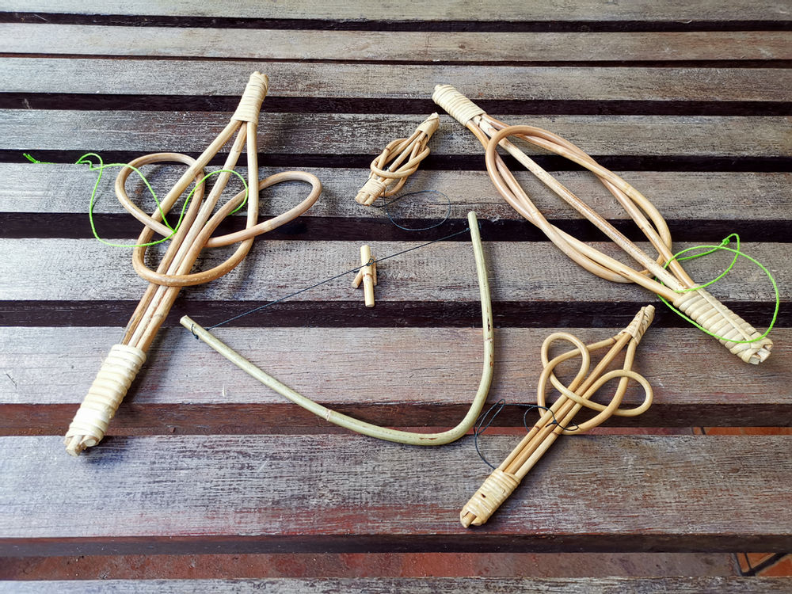

LOCAL ACTIVITIES
1. Food Hunting in the ForestLearn and experience how the Indigenous People hunt using their traditional weapon and cook their food in the jungle. |
|
2. Jungle TrekkingVisitor can learn about the history of Gombak Jungle and gain knowledge about the plant and animal in the rainforest. Visitor also can get the chance to swim in the stream after a long walk in the jungle. |
|
3. Playing KerchangKerchang is a traditional game puzzle of the Indigenous People. It also has been gazetted as Malaysia National Heritage in 2018. Challenge yourself and try to solve different level of Kerchang. |
 |
4. WeavingFind out how to weave from the elderly of Indigeneous People to create variety of accessories and basket designs. |
FOODS
The Jungle Style Local FoodGrab a chance to experience how to cook your own meal the Indigenous People way. The rice is cooked in bamboo, the meat is barbequed over a roaring flame, and water is boiled in bamboo to give it a naturally sweet taste. It’s a Malaysian food culture most people cannot claim to have tried. |
TOURISM
Orang Asli Museum GombakCome and visit the Orang Ali Museum Gombak located near the Indigenous People Village. This museum showcases the history and tradition of the Indigenous People. This museum also aims to preserve the cultural heritage of indigenous Orang Asli people which including the famed Mah Meri of Pulau Carey. It was established in 1987 and the entrance fee is free. Visitors can see all the things display in the museum that related with aboriginal people in Selangor. It opens daily from 9 a.m. until 5 p.m. except on Friday. |